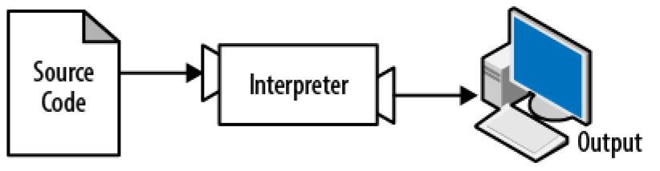
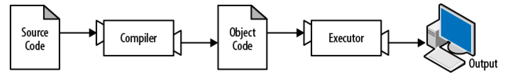

فصل اول
راه و روش برنامه نویسی
هدف از این کتاب آموزش شما است تا بتوانید مانند یک دانشمند کامپیوتر بیاندیشید. این روش فکر کردن متشکل از مجموعهای از بهترین خصیصههای ریاضیات، مهندسی، و علومی طبیعی است. دانشمندان کامپیوتر مانند ریاضیدانان از زبان رسمی برای بیان کردن ایدهها استفاده میکنند (به خصوص محاسبات). آنها مانند مهندسان چیز هایی را طراحی میکنند، بخشها و جزها را در یک سیستم سر هم میکنند و گزینهها را ارزیابی میکنند . آنها مانند دانشمندان رفتار سیستمهای پیچیده را مشاهده میکنند، فرضیات را شکل میدهند و پیش بینیهای خود را امتحان میکنند.
مهم ترین خصیصهی یک دانشمند کامپیوتر حل مسئله است. حل مسئله به معنای توانایی فرموله سازی مسائل، خلاقانه فکر کردن دربارهی راه حلها و بیان راه حل به صورت مشخص و واضح است. همانگونه که از شواهد پیداست فرآیند یادگیری برنامهنویسی یک فرصت عالی برای تمرین توانایی حل مسئله است. به همین دلیل نام این بخش" راه *و *روش *برنامه *نویسی"** نام گذاری شده است.
در یک مرحله شما یاد خواهید گرفت که چگونه برنامهنویسی کنید که یک توانایی کارآمد به خودی خود است، و در مرحلهی بعد از برنامه نویسی به عنوان یک پایان استفاده خواهید کرد . هر چه جلوتر می رویم مفهوم پایان مشخصتر خواهد شد !
زبان برنامه نویسی Python
زبان برنامه نویسی که در این کتاب یاد خواهید گرفت Python است. Python یک نمونه از زبان های سطح بالاست. زبان های C ، C++ ، Perl ، Java و .... نیز در مجموعهی زبانهای سطح بالایی جا میگیرند.
علاوه بر زبانهای سطح بالا زبانهای سطح پایین نیز وجود دارند که گاهی به آنها زبان ماشین یا زبان اسمبلی نیز گفته میشود . به صورت خلاصه کامپیوترها تنها توانایی اجرای برنامههایی را دارند که به زبان سطح پایین نوشته شده باشند. بنابراین برنامههایی که به زبان سطح بالا نوشته شدهاند باید پردازشهایی بر روی آنها انجام شود تا قابل اجرا شوند . این پردازش اضافه زمان بر خواهد بود که یک ضعف کوچک زبان های برنامه نویسی سطح بالا است.
مزیتهای زبان های سطح بالا نسبت به زبان های سطح پایین بیشمار است . اولین مزیت راحتی نوشتن برنامه با زبانهای سطح بالا نسبت به زبان های سطح پایین است. نوشتن برنامه با زبان سطح بالا زمان بسیار کمتری نسبت به نوشتن همان برنامه با زبانی سطح پایین میگیرد. این نوع زبانها کوتاهتر و خواناتر بوده و احتمال درست بودن آنها بیشتر است. دومین مزیت قابل حمل بودن آنهاست به این معنا که توانایی اجرا بر روی رایانههای مختلف را با مقداری کم و یا گاهی هیچ تغییری دارند. برنامه های نوشته شده با زبان های سطح پایین فقط بر روی رایانهای خاص اجرا میشوند و برای اجرا بر روی رایانهای دیگر باید از ابتدا آن را نوشت.
به دلیل وجود این مزایا ، امروزه تقریبا تمامی برنامهها با زبان سطح بالا نوشته میشوند. زبان های سطح پایین فقط برای تعدادی محدود از کاربردهای خاص استفاده میگردند.
در تقسیم بندی برنامههایی که زبانهای سطح بالا را به سطح پایین پردازش میکنند به ۲ دسته بر میخوریم: مفسر ها(Interpreters) و کامپایلر ها(Compilers) .
یک مفسر زبان سطح بالا را می خواند و آن را اجرا میکند. به این مفهوم که کاری را انجام میدهد که برنامه میگوید انجام بده ! مفسرها برنامه را ریز به ریز پردازش میکنند . به صورت مداوم خط ها را میخوانند و محاسبات را انجام میدهند . شکل 1-1 ساختار یک مفسر را نمایش می دهد. 
شکل1-1. یک مفسر برنامه را ریز به ریز پردازش می کند، به صورت مداوم خط ها را میخواند و محاسبات را انجام میدهد.
یک کامپایلر قبل از شروع اجرا برنامه، تمامی آن را می خواند و آن را ترجمه میکند. در این متن به برنامهی سطح بالا کد منبع (Source Code) و به برنامهی ترجمه شده کد شی(Object Code) یا اجرا شنونده (Executable) گفته میشود. هنگامی که یک برنامه کامپایل شد، برای اجرا آن بدون نیاز به ترجمه یا کامپایلی دوباره میتوانید بلافاصله آن را اجرا نمایید .  شکل 2-1 ساختار یک کامپایلر را نمایش میدهد.
شکل2-1. یک کامپایلر کد منبع را به کد شی ترجمه کرده و کد شی توسط اجرا کنندهی سخت افزاری اجرا میشود.
Python در زمرهی زبان های مفسری قرار میگیرد، زیرا برنامههای نوشته شده با این زبان توسط یک مفسر اجرا میشوند. دو راه برای استفاده از مفسر زبان Python وجود دارد: حالت تعاملی: (Interactive Mode) و حالت سندی (Script Mode). در حالت تعاملی شما برنامههای Python را مینوسید و مفسر نتیجه را نمایش می دهد :
>>>1+1\
2
علامت "<<<" اعلانی است که مفسر برای نشان دادن "آماده بودن" استفاده میکند. اگر شما 1+1 را بنویسید، مفسر در پاسخ 2 را نمایش خواهد داد.
متناوبا شما میتوانید کد خود را داخل یک فایل ذخیره کنید و با استفاده از مفسر محتوی آن فایل را اجرا نمایید . به این روش ، روش سندی (script) گفته میشود . نام سندهای python با پسوند .py به اتمام میرسند مانند:
Test.py
برای اجرای سند (script) باید نام آن را در اختیار مفسر قرار دهید. به طور مثال در صورتی که سندی با نام dinsdale.py داشته باشید و شما در حال کار با پنجرهی دستورات UNIX باشید (Unix Command) برای اجرا کافی است python dinsdale.py را تایپ نمایید. در دیگر محیطهای توسعه دهنده جزئیات سندهای اجرایی متفاوت هستند. شما می توانید دستورالعملهای لازم برای کار با محیط عملیاتی مورد نظر خود را در سایت python پیدا کنید. http://python.org .
کار در مد تعاملی python برای تست قسمت های کوچک کد بهینه است. زیرا شما میتوانید با نوشتن چند خط کد بلافاصله آن را اجرا نمایید. اما برای کدهای بیش از چند خط شما بایستید آن ها را در قالب یک سند (script) ذخیره نمایید تا در آینده قابلیت تغییر و اجرا یشان را داشته باشید.
یک برنامه چیست ؟
**یک برنامه مجموعهای است از دستورالعملهایی که روش اجرای دسته ای از محاسبات را مشخص میسازد. این نوع محاسبات گاهی از نوع ریاضیاتی مانند حل سامانهای از معادلات یا پیدا کردن ریشه چند جملهایها و گاهی از نوع محاسبات نمادینی مانند پیدا کردن و یا تعویض یک تکه متن در داخل یک سند و یا (به اندازه کافی عجیب ) کامپایل کردن یک برنامه است.
جزئیات در زبانهای برنامه نویسی مختلف ، متفاوت هستند اما چندین دستورالعمل ابتدایی تقریبا در تمامی زبانها به چشم میخورد :
ورودی (Input):\ داده ها را از کیبورد ، یک فایل و یا دستگاه های دیگر خواندن.
خروجی (output):\ نمایش دادهها بر روی صفحه ی نمایش و یا ارسال داده ها به یک فایل یا دستگاههای دیگر.
ریاضی (math):\ انجام عملیاتهای پایه ای ریاضیاتی مانند جمع و ضرب
اجرای شرطی (conditional execution):\ چک کردن شروطی خاص و اجرا قطعه کد مناسب .
تکرار(repetition):\ اجرای چند باره ی چندین عملیات ، معمولا با برخی تغییرات.
هر برنامهای که شما تا به حال از آن استفاده کردهاید جدا از میزان پیچیده بودن آن از دستورالعملهایی ساخته شدهاند که بسیار شبیه به دستورالعملهای بالاست. پس شما میتوانید به برنامه نویسی بعنوان فرآیند شکستن مجموعهای پیچیده و بزرگی از وظیفهها (tasks) به ریز وظیفههای (subtask) کوچکتر تصور کنید، این فرایند تا هنگامی که ریز وظیفه به قدری کوچک شوند که بتوانند با یکی از دستور و العملهای ذکر شده در بالا اجرا شوند ادامه مییابد.
ممکن است این ایده کمی مبهم به نظر برسد اما زمانی که در مورد الگوریتمها صحبت کردیم باز به این موضوع بر خواهیم گشت.
Debugging چیست ؟
برنامه نویسی مستعد خطا است. به خطاهای برنامه نویسی Bug (حشره) و به فرآیند جستجو و از بین بردن این Bug ها Debugging گفته میشود .
در برنامه نویسی ۳ دسته خطا وجود دارد:
- syntax errors(خطا های نحوی)
- runtime errors(خطا های در زمان اجرا)
- semantic errors (خطا های معنایی)
تشخیص دادن نوع خطا برای از بین بردن سریع تر آن می تواند مفید باشد.
Syntax Errors
Python توانایی اجرای برنامه هایی را دارد که از نطر نحوی (syntax) صحیح باشند. در غیر اینصورت مفسر پیغام خطایی را نمایش خواهد داد. منظور از Syntax ساختار یک برنامه و قوانین مربوط به آن ساختار است. برای مثال پرانتزها باید به صورت زوج استفاده شوند بنابراین (1+2) صحیح است. اما (8 یک خطای نحوی است.
انسانها در زبانهای تعاملی خود مانند زبان شیرین فارسی و یا انگلیسی توانایی تحمل غلطهای نحوی را دارند به همین دلیل است که می توانیم شعر بخوانیم ! اما python به این اندازه بخشنده نیست ! در صورت وجود یک خطا ی نحوی در هر کجای برنامه، پیغام خطا به نمایش در خواهد آمد و برنامه ای شما بسته خواهد شد و توانایی اجرای آن را نخواهید داشت. در طول هفتههای ابتدایی برنامه نویسی به احتمال بالا زمان زیادی را صرف از بین بردن خطاهای نحوی برنامه خودتان خواهید کرد. با افزایش تجربه در برنامه نویسی خطاهای کمتری رخ می دهد و سرعت از بین بردن خطاهای باقی مانده در شما به شدت افزایش مییابد.
Runtime Errors
دستهی دوم خطاها، خطاهای زمان اجرا نامیده میشنوند . علت این نوع نام گذاری این است که خطا تا قبل از اجرا برنامه نمایش داده نخواهد شد. این دسته خطاها به دلیل اینکه معمولا نشان دهندهی اتفاق افتادن چیزی استثنایی (و بد) هستند exceptions (استثناها) نیز گفته می شود.
خطاهای زمان اجرا در برنامههای سادهای که در چندین بخش آینده خواهید دید تقریبا نایاباند . پس ممکن است مدت زمانی طول بکشد تا با یکی از این نوع خطاها مواجه شوید .
Semantic Errors
سومین دسته از خطاها ، خطاهای معنایی (semantic) نام دارند. در صورتی که در برنامهی شما یک خطای معنایی وجود داشته باشد، برنامهی شما با موفقیت اجرا خواهد شد درحالی که رایانه خطایی را تولید نمیکند، اما کار درستی انجام داده نمیشود. برنامه کار دیگری را انجام میدهد. به طور دقیق تر کاری را میکند که شما به آن گفتهاید که انجام دهد!
مشکل در این است که برنامهای که شما نوشتهاید، برنامهای نیست که قصد نوشتن آن را داشتید. معنای برنامه شما (semantic) غلط است. مشخص کردن خطاهای معنایی کمی وابسته به تکنیک است زیرا نیازمند است که شما با نگاه کردن به خروجی های برنامه و تلاش برای فهمیدن اینکه برنامه چه می کند برعکس کار کنید.
خطایابی تجربی
یکی ار مهمترین تواناییهایی که شما به آن نیاز خواهید داشت خطایابی است (Debugging). با اینکه خطایابی میتواند اعصاب خوردکن باشد اما بدون شک یکی از هوشمندانه ترین، چالش برانگیزترین و جالبترین بخشهای برنامه نویسی است.
از بعضی لحاظ خطایابی مانند شغل کارآگاهان است . شما با مجموعهای از شواهد مواجه میشوید و باید فرآیند و اتفاقاتی که به جواب ختم میشوند را مشخص کنید.
میتوان از لحاظهای دیگری خطایابی را مانند علوم تجربی دانست. به محض اینکه ایدهای در مورد علت خطای برنامه دارید آن را تغییر میدهید و بار دیگر برنامه را امتحان میکنید . در صورتی که فرضیا شما درست باشد. میتوانید خروجی تغییرات را پیش بینی کنید و یک گام به یک برنامهی کارآمد نزدیکتر خواهید شد. در صورتی که فرضیاتتان اشتباه باشد باید فرضیات جدیدی را بوجود بیاورید . همانگونه که شرلوک هلمز می گوید : "زمانی که شما غیر ممکن را حذف میکنید، هر چه باقی میماند ، حتی اگر غیر محتمل باشد، حقیقت است. (A. Conan Doyle, the Sign of Four)”.
برای بعضی افراد برنامه نویسی و خطایابی یکی است . از این نگاه برنامه نویسی فرآیند خطایابی تدریجی یک برنامه است تا هنگامی که نتیجه مورد نظر از آن بدست آید. ایدهی پست این تفکر اینگونه است که شما باید با برنامهای شروع کنید که خروجی دارد اما نه آنچه شما انتظار دارید! سپس کمی تغییرات در آن اعمال کنید و آن را خطایابی کنید اینگونه خواهد بود که شما همیشه یک برنامهی کارآمد خواهید داشت .
به طور مثال Linux سیستم عاملی متشکل از خطها کد است اما شروع آن از یک برنامهی کوچکی بود که Linus Torvalds از آن برای جستجوی چیپ ست 80386 اینتل استفاده میکرد . بر طبق سخنان Larry Greenfield: "یکی از پروژه های Linus برنامهای بود که بین چاپ AAAA و BBBB تغییر میکرد. بعدها این برنامه به Linux تکامل یافت “ (The Linux Users’ Guide Beta Version 1).
در بخشهای آینده پیشنهادات بیشتری در مورد خطایابی و تمرین های برنامه نویسی خواهیم کرد.
زبان های رسمی و طبیعی
زبانهای طبیعی (Natural language ) زبانهای هستند که مردم با آنها مکالمه میکنند. مانند انگلیسی، اسپانیایی، فرانسوی، فارسی و .... این زبانها توسط مردم طراحی نشدهاند (با این حال انسانها بر روی زبانها نظمهایی گذاشتهاند); زبانها به خودی خود تکامل یافتهاند.
زبانهای رسمی (Formal Language) زبان هایی هستند که توسط مردم به منظور استفادهای خاص طراحی شدهاند . به عنوان مثال نشانه گذاریهایی که ریاضیدانان از آنها استفاده میکنند یک نوع زبان رسمی است که مختص نشان دادن رابطهی بین اعداد و نمادهای ریاضی است. شیمی دانان از یک نوع زبان رسمی برای نشان دادن ساختار شیمیایی مولکولها استفاده میکنند. و از همه مهمتر :
زبان های برنامه نویسی نوعی زبان رسمی هستند که به منظور بیان محاسبات طراحی شدهاند.
زبان های رسمی قوانین سخت گیرانه و موکدی در مورد ساختار نحوی خود دارند
(Syntax). به عنوان مثال،3+3=6یک عبارت ریاضیاتی صحیح از نظر نحوی است،
اما3+=3\$6اینگونه نیست. H~2~O یک فرمول شیمیایی صحیح از نظری نحوی است
اما ~2~Zz از نگاه نحوی غلط است.
قوانین نحوی در دو دسته ظاهر میشوند، وابسته به نشانهها ، وابسته به ساختار. نشانهها (tokens) پایهایترین المان در زبانها هستند. مانند کلمهها، اعداد، و المانهای شیمیایی. یکی از مشکلات 3+=3\$6 غیر قانونی بودن واژه ی \$ در ریاضیات است .همچنین ~2~Zz صحیح نیست زیرا هیچ المان با مخفف Zz در شیمی یافت نمیشود.
دومین نوع از خطاهای نحوی وابسته به ساختار یک عبارت است. نوعی که
نشانههای چیده شدهاند. عبارت3+ =3با اینکه + و = نشانه های صحیح و
قانونی هستند غیر صحیح است زیرا نمیتوان این دو نشانه را در کنار یکدیگر
بدون وجود واسطهای استفاده کرد. همینطور در یک فرمول شیمیایی زیر جمله بعد
از نام المان آورده میشود نه قبل از آن.
تمرین 1-1.\ یک جمله صحیح (از لحاظ ساختاری) فارسی که شامل نشانه ها باشد بنویسید. سپس جمله ای دیگر با نشانه های صحیح اما ساختار غلط بنویسید.
زمانی که شما جمله ای به زبان فارسی و با عبارتی را در یک زبان رسمی میخوانید باید بتوانید ساختار آن را تشخیص دهید (اگر چه در زبانهای طبیعی به صورت ناخودآگاه این کار را میکنید). این فرآیند تجزیه (parsing) نامیده میشود.
به طور مثال هنگامی که شما جملهی "سکه افتاد" را میشنوید، در مییابید که "سکه" نهاد و "افتاد" گزاره است. زمانی که جملهای را تجزیه کردید می توانید معنی آن را متوجه شوید. با فرض اینکه میدانید سکه چیست و افتادن به چه معناست شما مفهوم کلی جمله را درک خواهید کرد.
اگر چه زبان های رسمی و طبیعی ویژگی های مشترک زیادی دارند –نشانه ها ، ساختار، نحو، و معنا- اما تفاوت هایی نیز وجود دارند :
ابهام:
زبان های طبیعی پر از ابهام هستند . به همین دلیل است که انسان ها با سرنخ های متنی و دیگر اطلاعات سر وکله میزنند.زبان های رسمی به گونه ای طراحی شده اند که تقریبا بدون ابهام باشند به این معنا که هر عبارتی بدون در نظر گرفتن متن در برگیرند ی آن دارای معنای مشخصی است .
افزونگی:
به منظور کاهش کج فهمی ها و جبران ابهامات زبان های طبیعی از افزونگی های زیادی بهره می گیرند. در نتیجه آن ها قالبا طولانی هستند. زبان های رسمی مختصر و افزونگی این نوع زبان ها نیز معمولا کمتر است .
لیترال؟:
زبان های طبیعی پر از اصطلاح ها و استعاره هستند. در صورتی که من بگویم : "دوزاریش افتاد" به احتمال زیاد سکه ای واقعی وجود ندارد که افتاده باشد (این یک اصطلاح به معنای متوجه شدن چیزی توسط فردی است) . زبان های رسمی دقیقا معنی چیزی که می گویند را می دهند .
افرادی که با صحبت کردن به زبان طبیعی بزرگ شدن ( همه ی انسان ها) اغلب تغییر و تنظیم خود برای یک زبان رسمی سخت خواهد بود . از نظری می توان تفاوت بین زبان رسمی و زبان طبیعی را مانند تفاوت بین شعر و نثر دانست، اما بیشتر از آن :
شعر:
لغات علاوه بر معنای آنها به دلیل صدا هایشان نیز استفاده می شوند و تمام شعر با هم یک اثر را خلق می کنند و یا احساسات را بر می انگیزند. ابهام در شعر نه تنها غیر شایع نیست بلکه گاها عمدا استفاده می شود.
نثر:
معنای تحت الفظی لغات مهم تر است و ساختار نقش مهمتری در معنا ایفا می کند. تجزیه و تحلیل نثر شدنی تر از شعر می باشد اما در نثر نیز گاها ابهاماتی به چشم می خورد .
برنامه ها:
معنای یک برنامه ی کامپیوتری بدون ابهام و تحت الفظی است و می توان تمام آن را با تجزیه و تحلیل نشانه ها (tokens) و ساختارشان درک کرد .
در این جا چند پیشنهاد برای خواندن برنامه ها ( و بقیه زبان های رسمی ) می کنیم . ابتدا ، به یاد داشته باشید که زبان های رسمی بسیار متراکم تر از زبان های طبیعی هستند پس خواند آنها زمان بیشتری می گیرد . همچینین ساختار در این نوع زبان های بسیار مهم است بنا بر این خواند آن ها از بالا به پایین و از چپ به راست ایده ی جالبی نیست ! در عوض یاد بگیرید که برنامه را در ذهن تجزیه کنید ، نشانه های را مشخص سازید و ساختارشان را تفصیر کنید . در آخر جزئیات مهم هستند. یک خطای کوچک در املای و یا تلفظ کلمه که معمولا شما در زبان های طبیعی از آن ها صرف نظر می کنید ، در یک زبان رسمی می تواند موجب تغییر بزرگی شود .
اولین برنامه
به طور سنتی اولین برنامه ای که در یک زبان برنامه نویسی جدید نوشته می شود “Hello World” نام دارد زیرا تمامی کاری که برنامه انجام می دهد نوشتن “Hello World” در صفحهی نمایش است . در Python به اینگونه خواهد شد :
print ’Hello, World!’
این یک مثال از عبارت print می باشد، که در واقع یک مقدار را بر روی صفحه نمایش می دهد . در این مثال مقدار زیر به نمایش در خواهد آمد
Hello, World!
علامت ‘ (quotation mark) در برنامه شروع و پایان متن مورد نظر برای نمایش را مشخص می سازد و در جواب ظاهر نمی شوند.
در Python 3 ساختار print کمی متفاوت می باشد :
print(‘Hello, World!’)
پرانتز ها تاکیدی بر تابع بودن print دارند. در فصل 3 به توابع خواهیم پرداخت.
در طول این کتاب از عبارت print استفاده خواهیم کرد. در صورتی که از Python 3 استفاده می کنید توجه به ساختار ذکر شده در بالا داشته باشید . به غیر از این تفاوت های بسیار کمی که باعث نگرانی باشند وجود دارد.
خطایابی
خوب است اگر بتوانید این کتاب را در مقابل کاپیوتر بخوانید تا بتوانید با چیشروی در کتاب ، مثال ها را نیز در کامپیوتر امتحان نمایید. شما می توانید بیشتر مثال ها را در حالت تعاملی اجرا کنید اما اگر کد ها را داخل یک سند (Script) بگذارید امتحان کردن نوع های مختلف آن راحت تر خواهد بود .
هر گاه در حال تجربه ی امکانات تازه ای بودید باید تلاش کنید که اشتباه کنید ! به عنوان مثال در برنامه ی “Hello, World!” در صورت نگذاشتن یکی از ‘ ها چه اتفاقی رخ می دهد ؟ در صورتی که هر دوی آن ها را نگذاریم چطور؟ چه اتفاقی رخ می دهد در صورتی که print را اشتباه بنویسیم ؟
این نوع تجربه ها کمک به خاطر سپردن آنچه خوانده اید می کنند; همچنین در خطایابی نیز کمک می کند زیرا باعث می شود کم کم به انواع مختلف خطا ها آشنا شوید . خیلی بهتر است که الان و به صورت عمد اشتباه کنید تا در اینده و به صورتی اتفاقی .
برنامه نویسی و مخصوصا خطایابی، گاها احساست قوی را برانگیخته می کنند . در صورتی که در پی سر و کله زدن با یک باگ سخت باشید ممکن است احساس عصبانیت، محزونیت و یا خجالت کنید .
این مسائل گواه بر این علت است که مردم به صورت طبیعی با کامپیوتر ها جوری رفتار می کنند که انگار انسان هستند . زمانی که به درستی کار می کنند به آنها به چشم یک هم تیمی نگاه می کنیم و زمانی که یک دنده و گستاخ می شوند، ما به آنها همانگونه پاسخ می دهیم که به انسان های گستاخ و لجوج پاسخ می دهیم(Reeves and Nass, The Media Equation: How People Treat Computers, Television, and New Media Like Real People and Places) .
آمادگی برای این نوع رفتار ها ممکن است شما را در برخورد با آنها کمک کند . یک دیدگاه فرض کردن رایانه به عنوان یکی از کارمندان خود با یک مقدار قدرت مشخص است. مانند سرعت و دقت، و ضعف های مختص به خود مانند عدم همدلی و عدم توانایی در درک تصویر بزرگ.
وظیفه شما مدیر خوب بودن است: پیدا کردن راه های برای بهره بری از قدرت ها و تسکین دادن ضعف ها است . پیدا کردن راه هایی برای استفاده از احساست خود برای به چالش کشیدن مشکلات ، بدون اجازه دادن به رفتار های ناخودآگاه خود برای تداخل کردن با توانایی هایتان برای بهینه کار کردن است .
آموزش خطایابی می تواند خسته کننده باشد، اما توانایی ارزشنمدی است که کارآمد، حتی برای فعالیت هایی فراتر از برنامه نویسی خواهد بود . در پایان هر فصل یک بخش خطایابی مانند همین بخش خواهیم داشت با تفکرات من در مورد خطایابی. امیدوارم که کمک کننده باشد !
واژه نامه :
حل مسئله (Problem Solving):\ فرآیند فرموله سازی یک مسئله، پیدا کردن یک را حل، و بیان آن.
زبان های سطح بالا (High-Level Language) :
یک زبان برنامه نویسی مانند Python که به منظور خوانایی و راحتی در نوشتن یک برنامه برای انسان ها طراحی شده است
زبان های سطح پایین (Low-Level Language):
یک زبان برنامی نویسی که برای اجرای راحت کامپیوتر طراحی شده است; همچنین به زبان ماشین (machine language) و زبان اسمبلی (assembly language ) نیز معروف است.
حمل پذیری (Portability) :
خصیصه ای از یک برنامه ای ایست که می تواند بر روی بیش از یک نوع رایانه اجرا شود.
تفسیر (Interpret):
اجرای یک برنامه ی نوشته شده با زبانی سطح بالا به صورت ترجمه ی خط به خط .
کامپابل(Compile):
ترجمه ی یک برنامه نوشته با زبانی سطح بالا به زبانی سطح پایین درآن واحد ، به منظور آمادگی برای اجرا در آینده.
کد منبع (Source Code):
برنامه ی نوشته شده با یک زبان سطح بالا قبل از کامپایل شدن.
کد شی (Object Code):
خروجی کامپایلر بعد از ترجمه شدن برنامه.
قابل اجرا (Executable):
نام دیگر کد شی که آماده ی اجراست.
اعلان (Prompt):
حروف نمایش داده شده توسط مفسر به منظور اعلان آمادگی دریافت وردی از کاربر.
سند (Script):
برنامه ی ذخیره شده در یک فایل ( معمولا در آینده تفسیر خواهد شد)
حالت تعاملی (Interactive Mode):
راهی برای استفاده از مفسر Python به وسیله ی تایپ کردن دستورات و عبارات در یک اعلان.
برنامه (Program):
دسته ای از دستورالعمل ها که یک پردازش را مشخص می سازد.
الگوریتم (Algorithms):
یک پردازش عمومی به منظور حل دسته ای از مسائل.
باگ (Bug):
خطایی در برنامه
عیب یابی (Debugging):
فرآیند پیدا کردن و حذف هر یک از 3 دسته خطا های برنامه نویسی.
نحو (Syntax):
ساختار یک برنامه
خطای نحوی (Syntax Error):
خطایی در برنامه که امکان تجزیه و تحلیل (parse) را غیر ممکن می کند (و به همین طور تفسیر را)
استثنا (Exception):
خطایی که در هنگام اجرای برنامه کشف می شود.
معنا (Semantic) :
معنای یک برنامه
خطا های معنایی (Semantic Error):
خطایی در برنامه که باعث کارکرد اشتباه نسبت به قصد برنامه نویس می شود.
زبان طبیعی (Natural Language):\ تمامی زبان های گفتاری که به صورت طبیعی تکامل یافته اند.
زبان های رسمی (Formal Language):
تمامی زبان هایی که انسان ها به منظور خاص طراحی کرده اند، مانند پیاده سازی ایده های ریاضیاتی یا برنامه های کامپیوتری; تمامی زبان های برنامه نویسی از این دسته می باشند.
تکن (Token):
یکی از عناصر ابتدایی ساختار نحوی برنامه، همانند کلمه در زبان های طبیعی.
تجزیه و تحلیل (Parse):
بررسی یک برنامه و تحلیل ساختار نحوی آن.
دستور پرینت (Print Statement):
دستورالعملی که باعث نمایش مقادیر بر روی صفحه ی نمایش توسط مفسر Python می شود.
تمرین ها
تمرین ۱-۱ **خوب است که این کتاب را در مقابل کامپیوتر بخوانید تا بتوانید هنگامی که به مثالی رسیدید آنرا امتحان کنید.
وقتی یک امکان جدید را میآزمایید، باید سعی کنید دچار اشتباه شوید. برای نمونه در مثال برنامه "Hello, World!" چه اتفاقی میافتد اگر یکی از علامتهای نقلقول را جا بیاندازید؟ چه اتفاقی میافتد اگر هر دو را جا بیاندازید؟ اگر print را اشتباه تایپ کنید چطور؟
این نوع آزمودن کمک میکند که آنچه را میخوانید به خاطر بسپرید؛ این کار همچنین وقتی برنامه مینویسید کمک خواهد کرد، چرا که معنای پیغامهای خطا را خواهید دانست. بهتر است الان و از قصد دچار اشتباه شوید تا بعداً و اتفاقی.
۱- اگر در یک عبارت چاپ یکی یا هر دو پرانتز را جا بیاندازید، چه اتفاقی میافتد؟
۲- وقتی یک رشته را چاپ میکنید، چه اتفاقی میافتد اگر یکی یا هردوی علامتهای نقلقول را جا بیاندازید؟
۳- علامت منفی میتواند برای ساختن یک عدد منفی مانند ۲- استفاده کنید. اگر یک علامت مثبت بگذارید چه اتفاقی میافتد؟ 2++2 چطور؟
۴- در علامتگذاری ریاضی صفرهای پیش از عدد مانند ۰۲ ایرادی ندارند. اگر در پایتون این کار را بکنید چه اتفاقی میافتد؟
۵- اگر دو مقدار بدون هیچ عملگری بین آنها داشته باشیم، چه اتفاقی میافتد؟
تمرین ۲-۱ مفسر پایتون را راه بیاندازید و از آن به عنوان ماشین حساب استفاده کنید.
۱- چند ثانیه در ۴۲ دقیقه و ۴۲ ثانیه هست؟
۲- چند مایل در ۱۰ کیلومتر هست؟ راهنمایی: هر مایل برابر ۱/۶۱ کیلومتر است.
۳- اگر یک مسابقه دوی ۱۰ کیلومتر را در ۴۲ دقیقه و ۴۲ ثانیه تمام کنید، سرعت متوسطتان چقدر است (زمان بر مایل به دقیقه و ثانیه)؟ سرعت متوسطتان به مایل در ساعت چقدر است؟